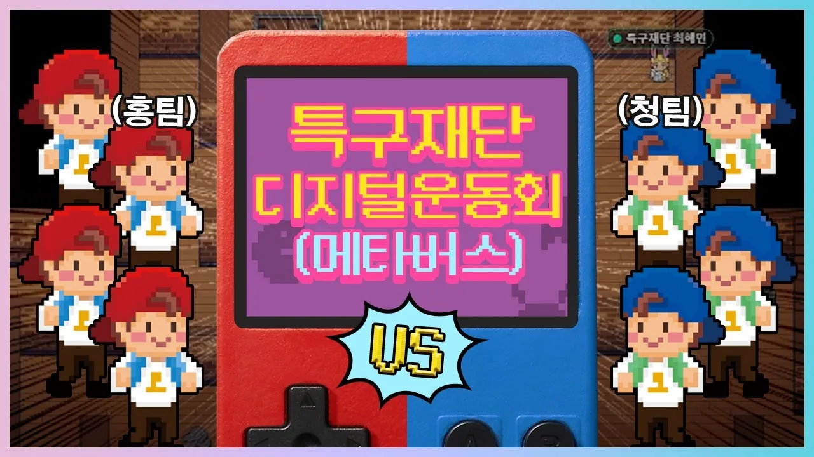
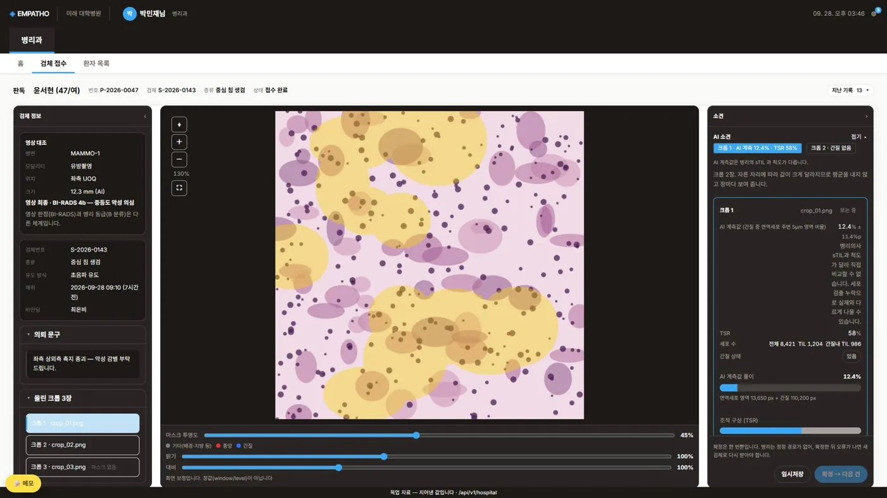

01 / STORY
하나의 실로
이어진 커리어
스크롤하면 실이 이어집니다. 회사는 바뀌었지만, 하는 일은 같았습니다.
2021.05 — 2023.08
콜라보에어 선임연구원 · 팀장
회사에 없던 사업을 처음부터 만들었습니다.
- 0→1 농수산물 커머스 — 산지 업체 컨택, 단가 협의, 판매가 설계, 판매 페이지 제작까지
- 결정 국가사업 제안이 계속 떨어지자, 문서 완성도 대신 기관 담당자와 상시 소통해 의도를 파악하는 방식으로 바꿈
- 기획 연구개발특구진흥재단 메타버스 디지털 운동회 — 결승전 유튜브 생중계 해설까지

직접 기획한 메타버스 디지털 운동회 · 공식 유튜브 썸네일 (2022)
국가사업 11개 기관 · 5건 수주 · 재계약률 100% · 쿠팡 키워드 1위
2023.08 — 2024.02
브이유컴퍼니 팀장
플랫폼 안에서 서비스 상품을 기획했습니다.
- 기획 크몽 서비스 4종을 직접 기획하고 운영해 상위 노출까지
크몽 3개 부문 1위 · 창업 3달 차 순매출 2,000만 원
2024.02 — 2026.03
㈜오웬푸드셰프애찬 브랜드마케팅 · 자사몰 PM
감 대신 클릭과 테스트로 화면을 정했습니다.
- 데이터 가입자 83%가 카카오 간편가입, 방문자 84%가 첫 방문 → 첫 화면에 '1초 가입'과 '첫 구매' 혜택 배치
- 배치 열지도와 구좌별 클릭으로 배너·프로모션 자리를 결정
- 0→1 임직원 전용몰 — 품목별 원가를 확인해 "팔수록 손해"를 막는 할인 구조, 4개월 만에 단독 오픈
 고객 데이터로 화면 배치 결정
고객 데이터로 화면 배치 결정
 매출을 4단계로 쪼개 막힌 구간부터
매출을 4단계로 쪼개 막힌 구간부터
재직 중 회원 +53만 · 매출 5배 · ROAS 450% → 600% (팀 성과)
케이스 자세히 →
2026.04 — 2026.10
바이오메디컬 AI 과정 미래융합교육원 × 건양대학교병원
숫자가 왜 움직이는지 직접 다뤄 보려고 선택했습니다.
- 기획 최종 프로젝트 EMPATHO — 팀 합의를 결정 27건·보완 8건으로 정리, "이번에 결정하지 않는 것" 목록으로 범위 관리
- 구현 화면 커밋 팀 내 최다(103), Go 서비스·nginx·예약/간호 API
- 신뢰성 TILI — 판독문과 수치가 다른 그림을 보던 5.8% 불일치를 찾아 계산 경로를 하나로

EMPATHO 병리과 화면 · 환자·의료진 정보는 가상 데이터
프로젝트 6개 · 모델링부터 서비스 배포까지
EMPATHO 자세히 →
NEXT
데이터로 흐름을 설계하는 기획자
두 경험을 합쳐, 이렇게 일하려고 합니다.
- 문제부터 다시 정의"더 정확하면 된다"보다 "어디서 끊기나"를 먼저
- 결정은 기록으로한 것만큼 "이번에 하지 않은 것"도 적습니다
- 한계는 먼저숨기면 치명적이고, 밝히면 신뢰가 됩니다